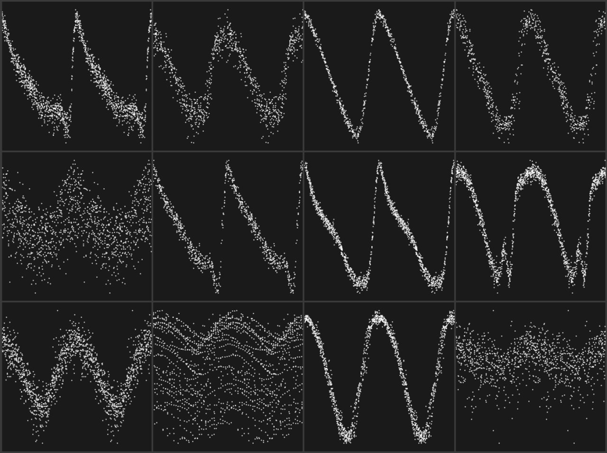
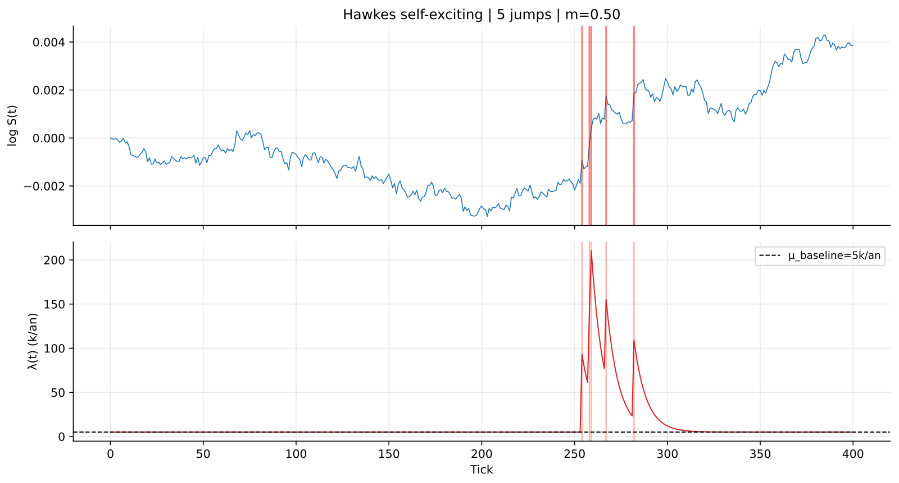

Neyl Gasmi
Research intern at the SAMM Lab (Paris 1) with Alain Celisse, working on state space models applied to variable star classification on OGLE-IV photometric time series. Previously at EuroCTP, Amsterdam, on the EU equity consolidated tape data quality.
Selected work
Mamba (SSM) architecture for variable star classification on irregular time series. Benchmarked against Transformer and LSTM baselines at iso-parameters. Supervised by A. Celisse.

CEP F+1O · ACEP F · ACEP 1O · T2CEP BLHer
T2CEP WVir · T2CEP RVTau · T2CEP pWVir · DSCT
Implementation of a jump detection pipeline in high-frequency tick data using composite e-values (GROW) and online sequential FDR control procedures. Benchmarked against the classical BH procedure, which loses FDR validity under high-frequency dependence due to bipower variation bias.
